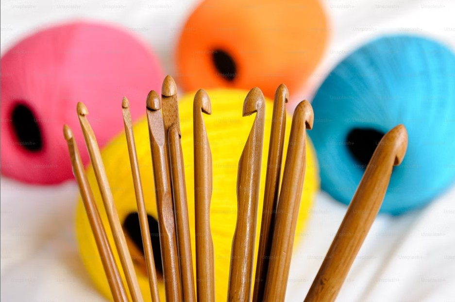
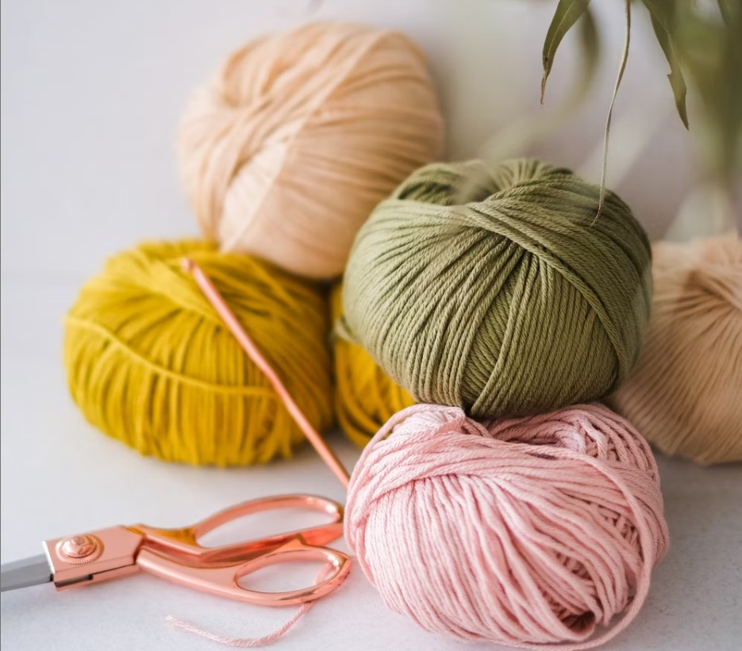

Types of stitches
September 25,2025 by Sydni Miller

Did you know that crochet has a wide variety of stitches? Crocheting is more than just making fabric; it's also about experimenting with the various stitches that give your work texture, creativity, and design. Because each stitch has a distinct appearance and function, you can make anything from straightforward patterns to elaborate designs.
Single, half-double, double, treble, and double treble crochet are some of the most popular stitches. Once you have mastered them, you can combine them in countless ways to create stunning patterns and textures, which are the basis of many crochet projects.
Size crochet hooks
September 23,2025 by Sydni Miller

Did you know that the size of the hook affects the size of yarn you use? Selecting the appropriate hook is crucial since it influences how your crochet project will appear and feel. An excessively large or small hook can alter the tension and make your work more difficult to handle.
A 1.5mm or 1.6mm hook works well for medium-sized yarn, while a 0.6mm or 0.75mm hook is ideal for thin yarn. Your project will turn out exactly how you want it to when you use the right hook size to guarantee even stitches.
Using the correct hook size also helps ensure comfort and efficiency while crocheting. When your hook matches your yarn, your hands won’t strain as much, and the stitches will glide smoothly, making the process more enjoyable. Additionally, it reduces the likelihood of mistakes like uneven rows or unintended gaps, which can save time and frustration later when finishing your project.